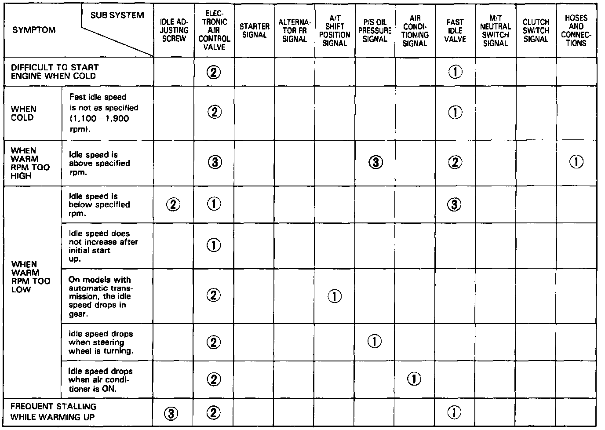

Sedan

Symptom to Sub-system Chart
NOTE: Across each row in the chart, the sub-systems that could be sources of a symptom are ranked in the order they should be inspected, starting with (1). Find the symptom in the left column, read across to the most likely source then refer to the system or component listed at the top of that column. If inspection shows the system is OK, try the next system (2), etc.
* Hoses and connections
- If bypass passages are blocked, a low idle speed will result.
- If hoses or bypass passages are leaking, a high idle speed will result.